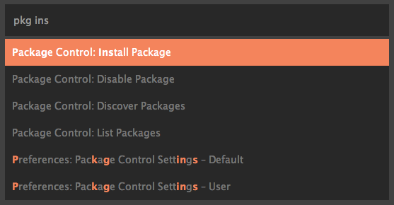
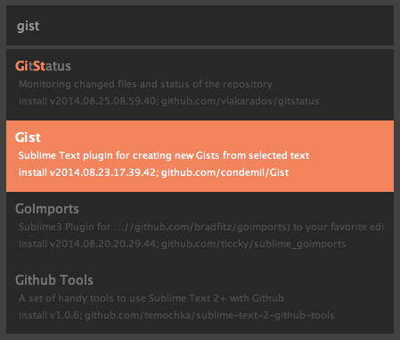
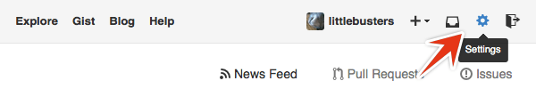
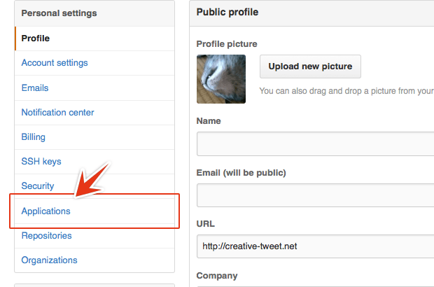
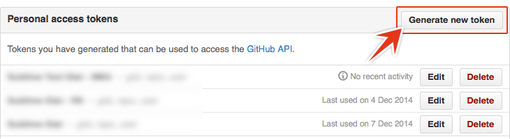
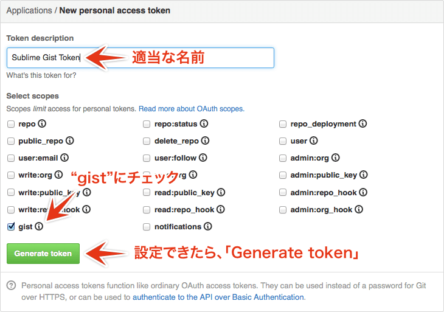
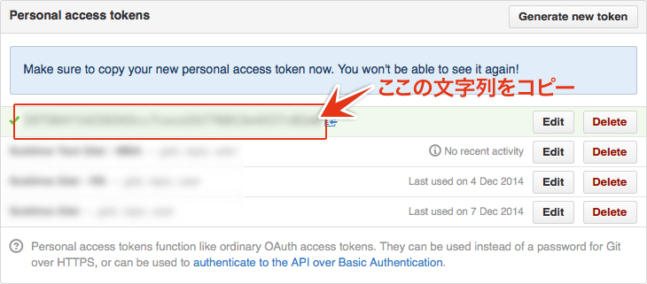
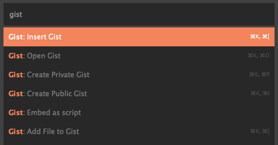
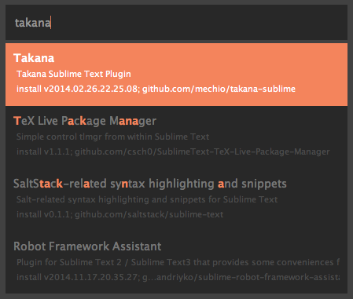
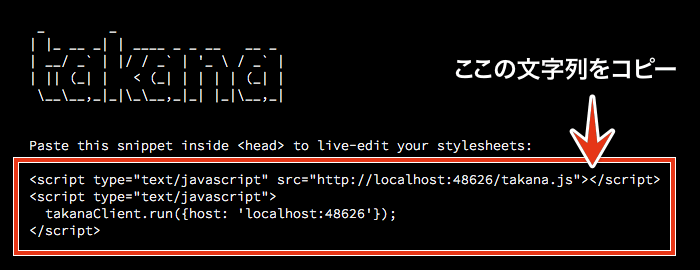

この記事はSublime Text Advent Calendar 2014 – Adventarの13日目の記事です。
私がたまによく使う、Sublime Textのパッケージ、GistとTakanaを紹介します。
Gist
まずはGistです。
メモでファイルを作ったけど、どこかに保存しておく程でもないな…という時って、意外にありませんか？
EvernoteやOneNoteに保存する方もいらっしゃると思いますが、Sublime TextからGistを扱えるパッケージを入れておくと、アプリの移動もなくGistを開いたり、保存したり、ドキュメントに挿入できたりします。
インストールと設定
Githubのアカウントが必要になりますので、まだお持ちでない方は取得しておきましょう。
「Tools → Command Palette…」（ショートカット：Command + Shift + p）を開き、「Package Control: Install Package」を選択します。

「gist」と入力して表示される「Gist」をインストールします。

インストールができたら、メニューバーから「Sublime Text → Prefercences → Package Settings → Gist → Settings – Default」を開いて内容をコピーします。つづけて、同じ階層にある「Settings – User」を開いてペーストします。
Githubへログインし、右上の「歯車アイコン」からSettingsのページを開きます。

左のナビゲーションにある「Applications」をクリックします。

「Personal access tokens」という項目にある、「Generate new token」をクリックします。

Token descriptionは適当な名前を付け、gistのみチェックを入れて、「Generate token」ボタンをクリックします。

Settingsのページに戻ると文字列が表示されているので、これをコピーします。ちなみにこの文字列は生成した時しか表示されず、あとから参照することができないので気をつけましょう。分からなくなったら、再度生成してください。それから、ぼかしていることから分かる通り、他の人に知られないようにしてくださいね。

Sublime Textに戻って、Settings – Userの「Token」へ、先ほどコピーした文字列をペーストして保存します。
これでひとまず準備はOKです。
Gistを使う
Command Paletteを開き、「gist」と入力すれば、6つのメニューが表示されると思います。

それぞれの機能は下記の通りです。
- Insert Gist
- 実行後、Gistの一覧が表示され、選択したGistの内容を、現在のキャレットへ挿入します。
- Open Gist
- 実行後、Gistの一覧が表示され、選択したGistを開きます。編集後、保存すればそのままGistに保存されます。
- Create Private Gist
- 現在のドキュメントからPrivate Gistを作成します。とりあえずのメモなら、これで保存するとよいでしょう。実行後、下部ステータスバーの上に、DescriptionとFile Nameの入力を促されます。オプションなので入力しなくてもOKですが、ファイル名を入れておくとインクリメントサーチで探しやすいです。
- Create Public Gist
- 現在のドキュメントからPublic Gistを作成します。こちらも実行後、下部ステータスバーの上に、DescriptionとFile Nameの入力を促されます。
- Embed as script
- 実行後、Gistの一覧が表示され、選択したGistを埋め込むためのscript要素が生成されます。ブログでコードを埋め込む時に活躍できるはずです。
- Add File to Gist
- 実行後、Gistの一覧が表示され、選択したGistへ現在のドキュメントを追加します。
一覧が表示されている時は、インクリメントサーチでファイルを検索できます。
気をつける点とすれば、Privateモードで作成していたとしても、URLが分かればアクセスはできるので、機密情報は間違っても保存しないようにしましょう。
ちなみにGistの管理そのものは、GistBoxが便利です。
Takana
続けて「Takana」の登場です。sayコマンドだと「てぃかな」なんですが、どうみても高菜です。
これはNode.jsを使って、CSSとSCSSの変更をライブプレビューできるツールです。OSXとLinuxのSublime Textに対応しています。
ライブプレビューという点ではEmmet LiveStyleと似ていますが、ブラウザとエディタの双方向で編集が反映されるLiveStyleに対し、Takanaでは、Sublime Textでの編集に限られます。
インストール
当然ながらNode.jsが必要ですので、インストールしておきましょう。公式サイトのインストーラーではなく、homebrewとかnodebrewを使った方が何かと便利です。ちなみに私はnodebrewを使っています。
まずはSublime Textへ、パッケージをインストールします。Command Paletteを開いて、「Package Control: Install Package」を選択します。
「takana」と入力して、表示されるパッケージをインストールしましょう。

続けてターミナルを使って、Node.jsのモジュールをインストールしていきます。「黒い画面怖い」とか言わない。
$ npm install -g takana@0.2.1
執筆時点での最新版は0.3.2ですが、うまく動作しないため、以前のバージョンを指定してインストールしています。
エラーが出た場合は、行頭にsudoが必要だったり、Xcodeの利用規約への同意がまだだったりだと思うので、確認してみてください。
Takanaを使う
ターミナルで、次のコマンドを実行します。
$ takana /path/to/project_folder
フォルダまでのパスは、takana （最後に半角スペース）と入力して、フォルダをドラッグ＆ドロップするのが一番簡単かと思います。
正常に起動できれば、メッセージとコードが表示されますので、そのコードをHTMLのhead要素内にコピペしましょう。

あとはCSSやSCSSを編集すれば、保存をしなくても即座に変更が反映されるようになります。下の参考動画ではmixtureを使っていますが、Takanaさえ起動していれば、fileプロトコルでもライブプレビューをすることができます。
[takana w/mixture][9] from [littlebusters][10] on [Vimeo][11].縮小していないフルサイズの動画
ちなみに、動画の中でBootstrap SASSを読み込んでるツールは、mixtureというJulleiylライクなジェネレータです。
拡張しまくった結果、カオスになった過去のCSSを編集するときは便利なのですが、BrowerSync使い始めてからかなり出番が減ってしまい、ちょっとした修正でしか使ってなかったり、というのが正直なところだったりします、えぇ。
明日はRyujiさんです！